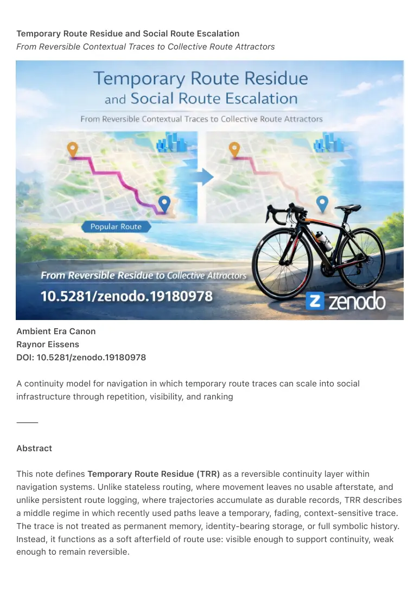

PDF page 1
Temporary Route Residue and Social Route Escalation
From Reversible Contextual Traces to Collective Route Attractors
Ambient Era Canon
Raynor Eissens
DOI: 10.5281/zenodo.19180978
A continuity model for navigation in which temporary route traces can scale into social
infrastructure through repetition, visibility, and ranking
⸻
Abstract
This note defines Temporary Route Residue (TRR) as a reversible continuity layer within
navigation systems. Unlike stateless routing, where movement leaves no usable afterstate, and
unlike persistent route logging, where trajectories accumulate as durable records, TRR describes
a middle regime in which recently used paths leave a temporary, fading, context-sensitive trace.
The trace is not treated as permanent memory, identity-bearing storage, or full symbolic history.
Instead, it functions as a soft afterfield of route use: visible enough to support continuity, weak
enough to remain reversible.

PDF page 2
The central claim is that route residue is initially contextual, thermodynamically light, and
reversible, but can scale into a qualitatively different regime when reinforced through repeated
use, shared visibility, and comparative legibility. Under these conditions, temporary traces no
longer function only as personal or situational guidance. They begin to produce collective route
attractors: popular paths, socially reinforced route habits, recognizable movement corridors,
and eventually rankable or competitive route layers.
This transition is described as a phase shift from Temporary Route Residue (TRR) to Collective
Route Attractor (CRA) and then to a Social Route Layer (SRL). In the TRR regime, residue is
local, fading, lightweight, and tied to a temporary condition such as a holiday, event, seasonal
pattern, or short-lived routine. In the CRA regime, repetition and visibility amplify certain paths
into shared attractors. In the SRL regime, route traces become socially structured and can
support rankings, popularity metrics, prestige effects, and community route identity.
The escalation is governed by three reinforcing variables:
• Repetition (R): frequency of traversal along a path
• Visibility (V): degree to which residue is perceivable to others
• Comparability (C): ability to contrast one route against another
When the combined effect of R × V and C crosses a perceptual threshold, residue
transitions from reversible guidance into collective structure.
The note distinguishes this model from conventional heatmaps, popularity-based
routing, and leaderboard systems. Existing systems generally visualize aggregate
density, optimize for previously traveled paths, or rank users by speed and
performance. By contrast, this framework introduces reversible route continuity as
the primitive layer, and treats social route structure as an emergent escalation
rather than the default condition. The novelty lies not in the observation that popular
routes exist, but in formalizing the intermediate transition by which temporary,
fading route residue can become socially persistent at the collective level.
This model is relevant for navigation, mobility systems, tourism flows, running and
walking platforms, public-space coordination, and ambient interfaces. It offers a
way to describe how route memory can remain humane, contextual, and non-
burdensome at first, while still explaining how gamification or repeated
reinforcement can transform a soft continuity field into a visible social
infrastructure.
⸻
PDF page 3
Core Claim
Temporary route residue is reversible at the individual level, but can become structurally
persistent at the collective level when reinforced by repetition, visibility, and ranking.
⸻
Escalation Law (Canonical Form)
TRR → CRA → SRL
Mechanically:
TRR + (R × V × C) → CRA → SRL
⸻
Definitions
Temporary Route Residue (TRR):
A fading, context-dependent route trace that supports short-term continuity without becoming
full persistent storage. TRR is thermodynamically light, reversible, and tied to situational context.
Collective Route Attractor (CRA):
A route trace that has gained enough repetition and visibility to shape shared path preference.
CRA functions as a behavioral pull within a population.
Social Route Layer (SRL):
A socially legible route regime in which paths can become ranked, identity-bearing, competitive,
or collectively organized. SRL introduces social signaling and potential gamification.
⸻
Canonical Positioning
This note extends the Route Residue Operator (RR-1) by formalizing the escalation pathway
through which temporary route residue can become collectively reinforced and socially legible.
It functions as a bridge layer between:
• individual navigation continuity
• and socially structured movement fields
PDF page 4
⸻
Prior-Art Positioning Statement
Existing route systems already support heatmaps, popularity scoring, and community path
optimization. This note does not claim the invention of popular routes as such. Its contribution is
the formalization of a reversible intermediate regime, and the escalation logic by which
temporary contextual residue can transform into collective and socially structured route fields.
⸻
Design Implication
If residue is left unbounded, navigation systems tend toward implicit social ordering.
If residue is constrained to remain reversible, systems preserve contextual guidance without
structural lock-in.
The key design question becomes:
When does residue remain guidance, and when does it become infrastructure?
⸻
Related Implementation
The principles described in this note are operationalized in the Ambient Running Protocol™,
where route residue emerges directly from movement without predefined maps or static routing
structures. In this context, residue is not stored as explicit route memory, but appears as a
situational, fading field shaped by traversal and repetition.
⸻
Closing Line
Route residue is contextual and reversible, until repetition turns it into social structure.